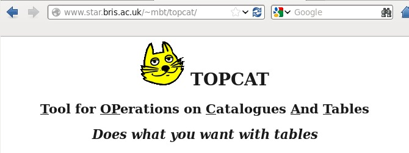
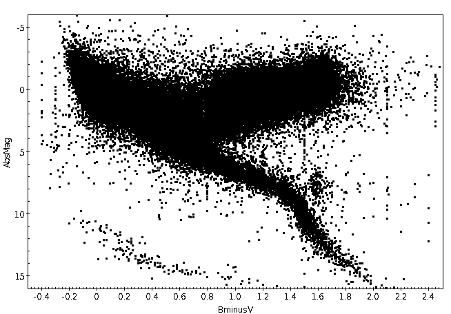
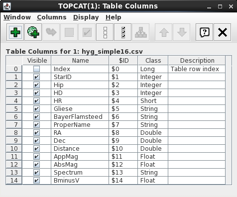

| Getting a dataset for TOPCAT Many astronomical datasets are publicly available on the internet. As an introduction to TOPCAT, let's make use of a catalog of 87,000 stars with measured distances, spectra and radial velocities contained in the HYG database at https://astronexus.com/hyg/. The database is a subset of data contained in three large catalogs of stars: the Hipparcos Catalog, the Yale Bright Star Catalog, and the Gliese Catalog of Nearby Stars. For convenience, we have made a simple version of the database which you can find here. Be sure you know in what directory it is located after you download it. Now, let's make the plot shown on the right. |
 |

 Notice that it bears some resemblance to the plot we wanted to make (shown above on the right), but (a)
the data points appear are denoted by red symbols not black ones, (b) it seems to have the Y axis scale flipped and (c) the range
of X and Y values is not what we want. We need to fix those things.
Notice that it bears some resemblance to the plot we wanted to make (shown above on the right), but (a)
the data points appear are denoted by red symbols not black ones, (b) it seems to have the Y axis scale flipped and (c) the range
of X and Y values is not what we want. We need to fix those things.
 Notice that some of the points disappear because they lie outside the specified
ranges. We'll talk about that later....
Notice that some of the points disappear because they lie outside the specified
ranges. We'll talk about that later....